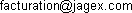

")
Conditions d'utilisation
Nous prions les utilisateurs résidant en Allemagne lors de la création de leur compte ou ayant créé leur compte après le 14 février 2007, de bien vouloir cliquer ici pour lire les Conditions d'utilisation applicables.
Nous prions les utilisateurs résidant au Brésil lors de leur création de compte et ayant créé leur compte après le 18 novembre 2008, de bien vouloir cliquer ici pour lire les Conditions d'utilisation applicables.
Nous prions les utilisateurs ne résidant pas en France lors de la création de leur compte, ou ayant créé leur compte avant le 20 août 2008, de bien vouloir cliquer ici pour lire les Conditions d'utilisation applicables.
Date effective: 11 novembre 2009
Conditions d'utilisation
Introduction
Ce site Internet est détenu, publié et hébergé par Jagex Limited (ci-après dénommé « Jagex »), une entreprise immatriculée en Angleterre et au Pays de Galles (numéro d'immatriculation 3982706). Notre siège social est situé à St. John's Innovation Centre, Cowley Road, Cambridge, CB4 0WS, United Kingdom. Notre numéro de TVA est le 791 951 784.
Le service de publication des sites de Jagex peut être directement joint à l'adresse suivante : 
Définitions
Dans le cadre des présentes conditions d'utilisation, le(s) « Produit(s) Jagex » désignent toutes les versions de « RuneScape® », « FunOrb® » ainsi que tous les autres jeux en ligne, édités périodiquement par Jagex, y compris tous les sites Web de Jagex utilisés pour prendre part à ces jeux.
La « Fermeture » d'un compte fait référence à la totalité ou à une partie des actions suivantes : le verrouillage, la suspension, l'interdiction temporaire ou définitive du compte.
Conditions d'application
Veuillez lire attentivement ces conditions d'utilisation. L'acceptation des présentes conditions générales constitue une condition préalable obligatoire à toute utilisation d'un produit Jagex (que vous soyez ou non abonné). Si vous n'acceptez pas ces conditions, ou une partie de celles-ci, nous vous prions de ne pas utiliser le produit Jagex. Votre utilisation d'un produit Jagex sera interprétée comme une acceptation de votre part des conditions en vigueur à la date de l'utilisation.
Ces conditions sont susceptibles d'être modifiées à tout moment. Veuillez lire les conditions d'utilisation à chaque fois que vous utilisez un produit Jagex. L'utilisation continue de nos produits de votre part sera considérée comme une acceptation de ces modifications, à partir de leur date effective, comme il est indiqué ci-dessus. Les comptes utilisateurs sont cependant gérés par la version en vigueur des présentes conditions générales au moment de leur ouverture.
Pour toutes questions relatives à ces conditions d'utilisation, veuillez nous contacter en envoyant un courrier électronique à  . Nous vous prions de ne pas utiliser nos sites Web si vous n'acceptez pas les termes desdites conditions dans leur intégralité.
. Nous vous prions de ne pas utiliser nos sites Web si vous n'acceptez pas les termes desdites conditions dans leur intégralité.
NOTE SPÉCIALE À L'ATTENTION DES PRÉADOLESCENTS ET DES UTILISATEURS MINEURS
L'utilisation de nos services est réservée aux personnes majeures ou aux mineurs ayant reçu l'accord parental ou de leur représentant légal.
Toutes les données personnelles collectées par nos soins, puis identifiées ultérieurement comme appartenant à une personne de moins de 13 ans, seront automatiquement supprimées. Nous recommandons aux parents ou aux tuteurs de créer un compte et de jouer avec leurs enfants. De nombreux parents nous ont signalé que jouer avec les produits Jagex en famille est amusant et enrichissant.
Si vous avez moins de 18 ans, vous faites valoir (c'est-à-dire que vous faites la promesse), en utilisant notre site, que vous êtes autorisés par vos parents/tuteurs à utiliser les produits Jagex, conformément à nos conditions d'utilisation et à notre Charte de confidentialité. Nous nous réservons le droit d'interdire tout compte si nous estimons que l'accord parental n'a pas été donné.
Si un parent nous a signalé que leur enfant a menti sur son âge au moment de l'inscription à nos produits Jagex, nous procéderons à la fermeture du compte, à la condition d'obtenir une preuve de l'identité de la personne déclarante en tant que parent ou tuteur.
Les parents peuvent accéder à davantage d'informations sur le Jeu et sur la manière de nous contacter en cliquant sur Guide parental
Sécurité/Abus
Avant d'utiliser tout produit Jagex, nous vous recommandons de lire les directives en cliquant sur Protection et sécurité. Il est particulièrement important de lire les directives suivantes Jouez de manière sécurisée et
Guide de santé et de sécurité.
Les parents doivent consulter nos instructions relatives à la sécurité dans la section Sécurité en ligne de Guide parental.
Décret n°96-360 du 23 avril 1996 relatif aux mises en garde concernant les jeux vidéo
Précautions à prendre dans tous les cas pour l'utilisation d'un jeu vidéo.
Evitez de jouer si vous êtes fatigué ou si vous manquez de sommeil.
Assurez-vous que vous jouez dans une pièce bien éclairée en modérant la luminosité de votre écran.
Lorsque vous utilisez un jeu vidéo susceptible d'être connecté à un écran, jouez à bonne distance de cet écran de télévision et aussi loin que le permet le cordon de raccordement.
En cours d'utilisation, faites des pauses de dix à quinze minutes toutes les heures.
Avertissement sur l'épilepsie.
Certaines personnes sont susceptibles de faire des crises d'épilepsie comportant, le cas échéant, des pertes de conscience à la vue, notamment, de certains types de stimulations lumineuses fortes :
succession rapide d'images ou répétition de figures géométriques simples, d'éclairs ou d'explosions.
Ces personnes s'exposent à des crises lorsqu'elles jouent à certains jeux vidéo comportant de telles stimulations, alors même qu'elles n'ont pas d'antécédent médical ou n'ont jamais été sujettes elles-mêmes à des crises d'épilepsie.
Si vous-même ou un membre de votre famille avez déjà présenté des symptômes liés à l'épilepsie (crise ou perte de conscience) en présence de stimulations lumineuses, consultez votre médecin avant toute utilisation.
Les parents se doivent également d'être particulièrement attentifs à leurs enfants lorsqu'ils jouent avec des jeux vidéo. Si vous-même ou votre enfant présentez un des symptômes suivants :
vertige, trouble de la vision, contraction des yeux ou des muscles, trouble de l'orientation, mouvement involontaire ou convulsion, perte momentanée de conscience, il faut cesser immédiatement de jouer et consulter un médecin.
Bien que nous nous réservions le droit de surveiller et de prendre toute action suite à une utilisation inappropriée de tout produit Jagex (y compris l'affichage de tout matériel inapproprié, de mauvais goût ou inadmissible de quelque manière que ce soit, par le biais de la messagerie instantanée ou différemment), nous ne pouvons garantir que tous les produits Jagex sont dépourvus d'un tel contenu ou nous engager à supprimer ou à modifier tout contenu particulier. Nous ne pouvons pas garantir, par ailleurs, que les utilisateurs respecteront nos conditions d'utilisation ou adopteront une attitude appropriée.
Si vous êtes victime d'un comportement offensant ou inapproprié ou si vous recevez une quelconque communication indésirable, vous pouvez utiliser les fonctions intégrées permettant de bloquer les messages. (Reportez-vous à cet article pour obtenir plus d'informations sur le blocage des messages.) Vous pouvez signaler tout comportement abusif en cliquant sur le bouton intégré dans le jeu "Signaler un abus". Vous pouvez également rechercher une aide externe, par exemple, en faisant appel aux parents ou aux autorités d'application de la loi. Si de tels problèmes persistent ou si le jeu ne vous convient pas, nous vous invitons à stopper immédiatement l'utilisation de ce site Web.
Votre compte
Pour utiliser les nombreuses fonctionnalités des produits Jagex, vous devez créer un compte. Une licence personnelle, non exclusive, non transférable et limitée à la période d'adhésion, est accordée à tous les détenteurs de compte valide, en vue de l'utilisation des produits Jagex, du téléchargement de notre logiciel client et de la connexion à nos serveurs, dans le seul objectif d'utiliser les produits Jagex conformément à ces conditions d'utilisation.
Vous n'êtes pas autorisé à choisir un nom d'utilisateur qui porte atteinte aux droits d'une tierce partie, se fait passer pour un membre du personnel de Jagex, qui crée délibérément de la confusion ou qui est de nature offensante, raciste, obscène, blessante, illégale ou inappropriée de quelque façon que ce soit ou qui ne respecte pas les exigences définies pour le nom d'utilisateur, telles que spécifiées sur notre site ou dans nos Règles de conduite. Nous nous réservons le droit de procéder à une telle évaluation, à notre entière discrétion, à modifier tout nom d'utilisateur, quelle qu'en soit la raison ou à prendre toute autre action que nous jugeons appropriée.
Vous vous engagez à maintenir à tout moment la nature secrète de votre mot de passe et à ne pas le divulguer à une autre personne. Vous êtes responsable des activités de toutes les personnes qui utilisent votre mot de passe pour accéder à votre compte. Pour vous aider à garantir la sécurité de votre mot de passe, vous devez protéger votre ordinateur des virus et des autres codes malveillants, y compris les chevaux de Troie. Vous devez utiliser votre mot de passe conformément aux exigences en matière de mot de passe, spécifiées sur notre site ou dans nos Règles de conduites. Un membre du personnel réel de Jagex ne vous demandera jamais votre mot de passe. Si vous pensez qu'une personne a volé votre mot de passe ou a accédé, d'une quelconque autre manière, à votre compte, effectuez une demande de récupération de compte par le biais du lien de récupération de compte figurant sur le site Web de tout produit Jagex. Pour consulter nos lignes directrices en matière de sécurité du mot de passe et de pratiques de sécurité, veuillez cliquer ici.
Règlement
Vous devez respecter la version actuelle des règles, consignes, instructions et codes de conduite tels qu'ils sont spécifiés dans tout produit Jagex, y compris nos règles de jeu, dont la version actuelle est disponible en cliquant ici.
Nos droits
Si, en agissant raisonnablement, nous considérons que nos conditions d'utilisation ont été ou sont susceptibles d'avoir été inobservées, ou qu'il est nécessaire, afin d'éviter ou de stopper tout préjudice ou dommages à l'encontre de notre entreprise, de tout produit Jagex, d'autres joueurs ou du public en général ou afin de minimiser notre responsabilité vis-à-vis des autres, nous nous réservons le droit, avec, ou dans certains cas, sans préavis, de (entre autres) : Mettre fin (comme il est défini ci-dessus) ou de modifier un ou tous les comptes des produits de Jagex que nous estimons vous être associés et/ou, de bloquer votre accès à nos sites Web et à nos services et de prendre toutes autres mesures que nous jugeons raisonnables. De telles actions peuvent engendrer une perte de votre crédit en tant que membre, sans obligation de remboursement, dès lors que vous êtes responsables de l'infraction constatée aux présentes conditions générales.
Jagex ne saurait être tenue responsable de toute perte d'argent effectif versé dans le cadre de tout commerce de produit/compte ou de toute autre transaction prohibée par les présentes conditions générales.
Dans le but d'éviter ou de remédier à toute inobservation de nos conditions d'utilisation ou d'éviter tout préjudice ou dommages à l'encontre de notre entreprise, de tout produit Jagex, des autres joueurs ou du public en général ou afin de minimiser notre responsabilité vis-à-vis des autres, nous pouvons, à notre entière discrétion, de manière automatique ou manuelle, surveiller, censurer (y compris le rejet ou la suppression de tout contenu) et/ou d'enregistrer des conversations instantanées publiques ou privées ou d'autres activités, dans le cadre de tout produit Jagex, sous réserve du respect des règles relatives à la protection des données personnelles.
Droits de propriété intellectuelle
Jagex®, RuneScape® et FunOrb® sont des marques commerciales déposées de Jagex Limited au Royaume-Uni, aux États-Unis et dans d'autres pays.
Vous n'êtes pas autorisé à désosser, décompiler ou modifier un quelconque logiciel client d'un produit Jagex, de quelque façon que ce soit (sauf dans la limite autorisée par la législation en vigueur). Vous ne devez pas utiliser une version modifiée/personnalisée du logiciel client ou tenter d'octroyer une sous-licence. Vous n'êtes pas autorisé à créer ou à fournir tout autre moyen permettant aux autres de jouer à un quelconque produit Jagex (y compris, sans s'y limiter, le remplacement ou la modification du logiciel client, les émulateurs de serveur).
Les matériaux (y compris sans s'y limiter toutes les informations, le logiciel, les données, le texte, les photographies, les graphiques, le son et la vidéo) placés sur les produits Jagex par nous ou pour notre compte, sont protégés par des droits d'auteur et par d'autres droits propriétaires intellectuels, revendiqués par nous-mêmes ou par nos partenaires commerciaux, nos fournisseurs ou nos annonceurs. Ces matériaux ou tout produit Jagex doivent être exclusivement utilisés dans le cadre de ces conditions d'utilisation et à des fins personnelles uniquement (et non pas commerciales).
Vous convenez que tous les biens intellectuels ou les autres droits relatifs à tous les caractères du jeu, le compte et les éléments sont notre propriété exclusive.
En publiant des conversations instantanées ou d'autres matériaux sur tout produit Jagex, vous consentez à nous accorder une licence non exclusive, mondiale, pour la durée du droit d'auteur en vigueur dans le territoire cédé, à titre gracieux, pour utiliser et/ou modifier lesdits matériaux sur tout produit Jagex que nous jugeons appropriés.
Vous convenez qu'en publiant toute contribution, de quelque forme que ce soit et à toutes fins, associé à tout produit Jagex (tel que, à titre d'exemples non exhaustifs, des suggestions et des idées de jeux ou des participations à toutes pages de la Galerie), vous consentez à nous accorder une licence non exclusive, mondiale, pour la durée du droit d'auteur en vigueur dans le territoire cédé à titre gracieux, pour utiliser et/ou modifier lesdits matériaux sur tout produit Jagex que nous jugeons appropriés. Vous vous engagez à ne pas supprimer votre contribution ou à réclamer une quelconque indemnisation au titre de son utilisation. Vous garantissez, en outre, que vous êtes le détenteur exclusif des droits d'auteur afférents à ladite contribution et que cette dernière ne porte, en aucune manière, atteinte aux droits d'une quelconque autre personne ou entité.
Abonnement
Certaines sections des produits Jagex requièrent un abonnement. Si vous vous abonnez, vous garantissez que toutes les informations communiquées sont exactes (y compris, sans s'y limiter, votre numéro de carte de crédit et la date d'expiration ainsi que les autres détails de paiement) et que vous disposez de l'accord parental approprié, le cas échéant. Vous vous engagez à régler tous les frais d'abonnement spécifiés, y compris toutes les taxes applicables. Sauf indication contraire, tous les prix affichés pour les pays de l'U.E. incluent la TVA.
En soumettant votre commande, vous demandez à vous abonner au(x) produit(s) Jagex concerné(s). Votre offre est acceptée et un contrat ayant force exécutoire est conclu lorsque nous envoyons un message à la boîte électronique de votre compte, confirmant que votre paiement a été reçu ou si vous vous connectez à une partie réservée exclusivement aux abonnés d'un produit Jagex (l'un des deux cas survenant en premier).
Tous les paiements d'abonnement seront prélevés à l'avance à des intervalles appropriés (par exemple, mensuellement dans le cas des abonnements mensuels) jusqu'à ce que vous résiliiez votre abonnement (voir ci-dessous).
Les paiements effectués par cartes de crédit sont également soumis à notre réglementation sur le paiement par carte bancaire qui est une composante de ces conditions d'utilisation.
Nous nous réservons le droit de modifier le montant ou les termes de nos frais d'abonnement, à tout moment. Si tel est le cas, nous vous en aviserons en envoyant un message à votre boîte électronique du Jeu (que vous devez consulter régulièrement), vous informant du changement de prix et, au même moment, en affichant un message qui apparaîtra lors de votre prochaine connexion à un quelconque produit Jagex. Les changements ne seront effectifs que 30 jours au moins après la date de réception de notre message, vous donnant ainsi l'opportunité de résilier votre abonnement si vous ne souhaitez pas payer le nouveau montant. Si vous ne résiliez pas votre abonnement avant la date effective, le nouveau montant s'appliquera.
Nous nous réservons le droit de vous facturer pour toute utilisation non autorisée de votre abonnement par des tierces parties.
Résiliation par vos soins
Vous pouvez résilier votre abonnement à tout moment en cliquant ici ou sur le bouton « Résilier l'abonnement » à la Gestion du compte des sites des produits Jagex.
Aucun autre frais d'abonnement ne vous sera facturé après votre résiliation. Les paiements déjà effectués ne seront pas remboursés (entièrement ou en partie) mais vous pouvez, bien sûr, utiliser le crédit de membre restant du compte.
Droit de rétractation
Lorsque votre lieu de résidence habituelle est la France, vous disposez d'un délai de sept (7) jours francs à compter de la date de souscription de votre abonnement payant pour vous rétracter en envoyant un email à l'adresse suivante : . Votre demande de rétractation entraînera votre remboursement dans un délai maximum de 30 jours à compter de votre demande.
Conformément à l'article L.121-20-2, 1° du Code de la consommation, votre droit de rétractation ne peut plus être exercé dès lors que vous avez activé votre compte payant.
Politique de confidentialité
Pour obtenir un descriptif de notre manière d'utiliser vos données personnelles, cliquez sur Charte de confidentialité.
Disponibilité
Nous consentons tous les efforts commerciaux raisonnables pour réduire les temps d'indisponibilité au minimum mais nous ne pouvons pas garantir que tout produit Jagex ou toutes données relatives à tout produit Jagex soient stockés(e)s ou transmis(es) de manière ininterrompue, sécurisée ou sans défaut ou que tout produit ou données enregistre(nt) des résultats particuliers. Nous nous réservons le droit de suspendre le fonctionnement de certains ou de tous les produits Jagex, à tout moment, sans préavis, à des fins de maintenance, d'amélioration ou pour toute raison nécessaire au fonctionnement correct de notre plateforme.
Autre équipement/logiciel
Nous ne pouvons nous engager à ce que tout produit Jagex fonctionne intégralement ou en partie sur tout équipement d'ordinateur spécifique ou avec tout logiciel spécifique ou qu'il ne contient aucun virus ou tout autre élément pouvant avoir un effet défavorable sur toute technologie. Nous ne sommes pas responsables pour tous dommages, qu'ils soient temporaires ou permanents, qui serait causé à votre matériel ou à vos logiciels pendant l'utilisation de tout produit Jagex.
Jagex.com et autres liens
Notre site Jagex.com est soumis à des conditions d'utilisation distinctes.
Nos produits Jagex peuvent inclure des liens permettant d'accéder à d'autres sites Internet. Nous ne pouvons être tenus responsables de ces sites ou de leur contenu, ni du caractère fonctionnel du lien. Ces sites sont susceptibles d'être soumis à leurs propres conditions d'utilisation et politiques de confidentialité.
NOTRE RESPONSABILITÉ/VOTRE INDEMNISATION
CETTE SECTION (AINSI QUE TOUTE AUTRE CLAUSE EXCLUANT OU LIMITANT NOTRE RESPONSABILITÉ) S'APPLIQUE À NOS DIRECTEURS, CADRES, EMPLOYÉS, SOUS-TRAITANTS, AGENTS ET ENTREPRISES AFFILIÉES AINSI QU'À NOUS-MÊMES. AUCUNE CLAUSE DU PRÉSENT ACCORD NE LIMITE OU N'EXCLUT, DE QUELQUE MANIÈRE QUE CE SOIT, NOTRE RESPONSABILITÉ EN CAS DE NÉGLIGENCE, À L'ORIGINE D'UN DÉCÈS OU DE PRÉJUDICE PERSONNEL, EN CAS D'ALLÉGATION FRAUDULEUSE OU DE TOUTE RESPONSABILITÉ NE POUVANT ÊTRE JURIDIQUEMENT EXCLUE OU LIMITÉE.
SAUF MENTION EXPRESSÉMENT INDIQUÉE DANS CES CONDITIONS D'UTILISATION ET DANS LA LIMITE AUTORISÉE PAR LA LOI EN VIGUEUR, NOUS RENONÇONS EXPRESSÉMENT À TOUTES REPRÉSENTATIONS, GARANTIES, CONDITIONS OU AUTRES CONDITIONS, EXPRESSES OU IMPLICITES, INHÉRENTES À UN ACTE LÉGISLATIF, COLLATÉRALEMENT OU DIFFÉREMMENT, INCLUANT SANS S'Y LIMITER, LES GARANTIES IMPLICITES, LES CONDITIONS OU LES AUTRES TERMES DE QUALITÉ ET D'APTITUDE SUFFISANTES POUR UN BUT PARTICULIER OU D'ATTENTION ET DE COMPÉTENCE RAISONNABLES.
DANS LA LIMITE AUTORISÉE PAR LA LÉGISLATION EN VIGUEUR, NOUS NE SOMMES PAS TENUS RESPONSABLE EN MATIÈRE CONTRACTUELLE OU CIVILE DÉLICTUELLE (Y COMPRIS LA NÉGLIGENCE), D'OBLIGATION STATUTAIRE OU DE MANIÈRE COLLATÉRALE OU DIFFÉREMMENT, DÉCOULANT DE OU EN RELATION AVEC CES CONDITIONS D'UTILISATION OU CE SITE WEB, POUR TOUS DOMMAGES INDIRECTS OU SPÉCIAUX OU POUR TOUTES PERTES ÉCONOMIQUES (Y COMPRIS LES PERTES DE REVENUS, DE PROFITS, DE CONTRATS, D'ACTIVITÉS OU D'ÉPARGNE ANTICIPÉE) OU TOUS DOMMAGES PUNITIFS OU PERTE DE DONNÉES, DANS CHAQUE CAS, MÊME SI NOUS AVONS ÉTÉ INFORMÉS DE LA POSSIBILITÉ DESDITS PERTES OU DOMMAGES, QUEL QUE SOIT LE MODE DE SURVENANCE.
NOTRE RESPONSABILITÉ ENVERS VOUS, EN MATIÈRE CONTRACTUELLE OU CIVILE DÉLICTUELLE (Y COMPRIS LA NÉGLIGENCE), D'OBLIGATION STATUTAIRE OU DE MANIÈRE COLLATÉRALE OU DIFFÉREMMENT, DÉCOULANT DE OU EN RELATION AVEC CES CONDITIONS D'UTILISATION OU CE SITE WEB SE LIMITE À £50, OU AUX SOMMES QUI NOUS ONT ÉTÉ VERSÉES LORS DES DOUZE MOIS PRÉCÉDANT L'ÉVÉNEMENT GÉNÉRATEUR DE RESPONSABILITÉ, LA PLUS AVANTAGEUSE L'EMPORTANT.
TOUTES LES RÉCLAMATIONS SERONT SOUMISES PAR ÉCRIT, DANS UN DÉLAI DE TROIS MOIS APRÈS LEUR SURVENANCE, FAUTE DE QUOI ELLES SERONT EXCLUES.
VOUS CONVENEZ, PAR LA PRÉSENTE, À COUVRIR JAGEX ET À LE DÉGAGER DE TOUTE RESPONSABILITÉ EN CAS DE TOUTES OBLIGATIONS DES TIERCES PARTIES, DE RÉCLAMATIONS, DE PERTES, DE DOMMAGES OU DE COÛTS DÉCOULANT DE VOTRE INOBSERVATION DES PRÉSENTES CONDITIONS D'UTILISATION, Y COMPRIS DES FRAIS ET HONORAIRES RAISONNABLES DES AVOCATS.
Cession
Vous n'êtes pas autorisé à transférer l'un quelconque de vos droits ou à déléguer l'une de vos obligations dans le cadre de ces conditions d'utilisation, sans notre accord préalable écrit.
Généralités
Aucun terme de ces conditions d'utilisation ne porte atteinte à vos droits prévus par la loi en tant que consommateur. Les en-têtes ci-dessus sont mentionnés à titre indicatif et n'ont pas de caractère contraignant. Aucun fait de tolérance de notre part à l'égard d'une disposition de ces conditions d'utilisation ne nous empêche de mettre en pratique ultérieurement ladite disposition (ou toute disposition similaire). Au cas où toute disposition de ces conditions d'utilisation serait jugée invalide par un tribunal compétent, les parties s'engagent cependant à reconnaître que le tribunal doit s'efforcer de mettre en vigueur l'intention des parties telle qu'elle résulte de la disposition annulée et que les autres dispositions restent en vigueur. À l'exception des clauses excluant ou limitant notre responsabilité, une personne n'étant pas partie à cet accord ne bénéficiera d'aucun droit, conformément à la Loi de 1999 sur les droits des Contrats (Droits des tierces parties), pour mettre en application toute condition de cet accord.
Loi applicable et Tribunaux compétents
Sous réserves des règles impératives issues du droit de la consommation, ces conditions d'utilisation sont régies par la loi anglaise et tout litige lié à ces dernières ou aux produits Jagex relèvera de la juridiction exclusive des tribunaux anglais.
Plaintes
Si ce site Web ou un quelconque aspect de ce dernier ne vous convient pas, veuillez nous contacter en utilisant les formulaires figurant sur notre site Web ou écrire à notre siège social à l'adresse ci-dessus.
Copyright © 2008 Jagex Ltd. Jagex et FunOrb sont des marques déposées de Jagex Limited au Royaume-Uni et des marques de commerce dans d'autres pays du monde.
L'utilisation de nos services implique votre acceptation de nos Conditions d'utilisation et de notre Charte de confidentialité.